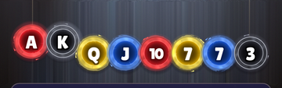
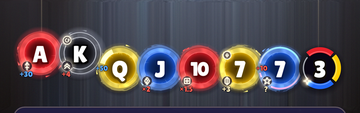
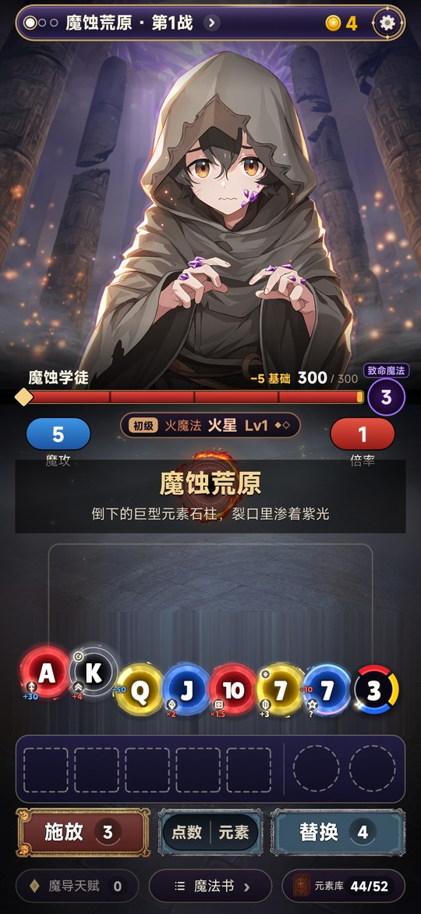
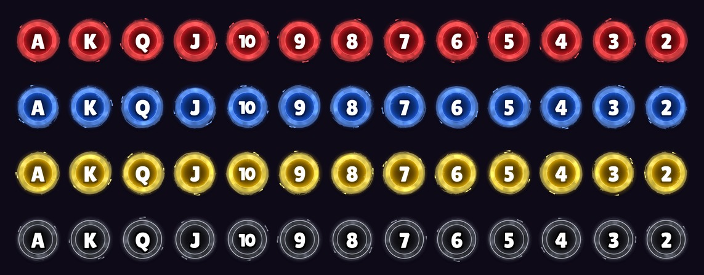
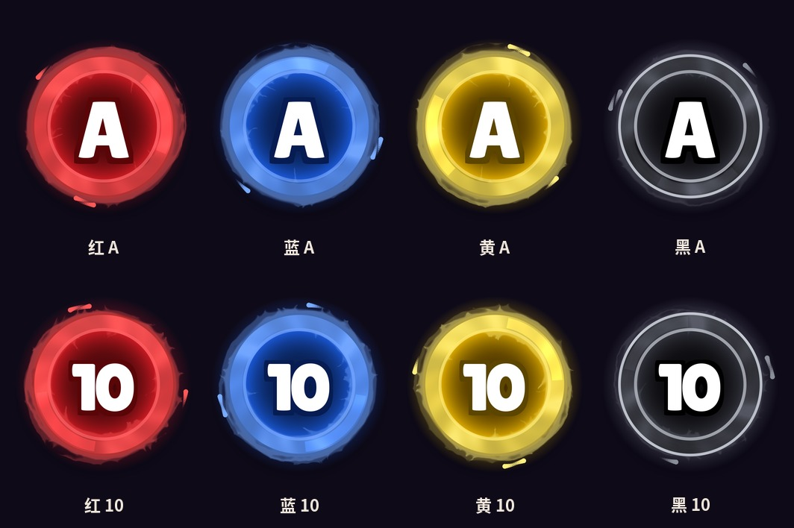
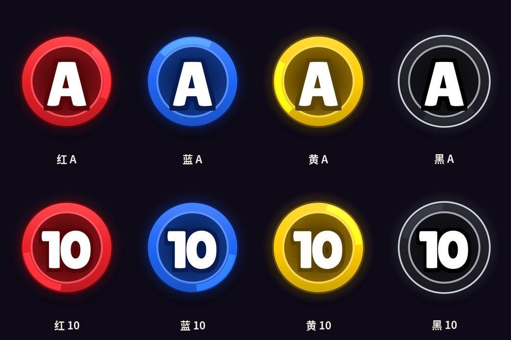
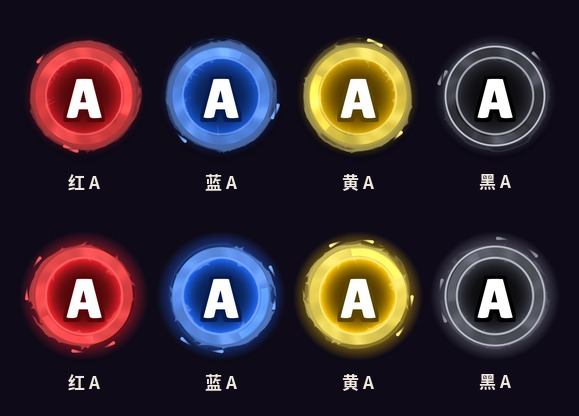
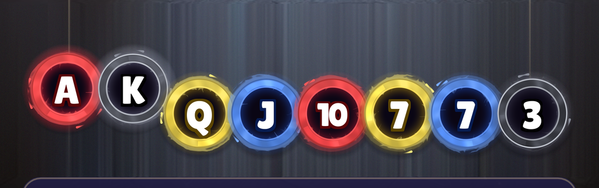
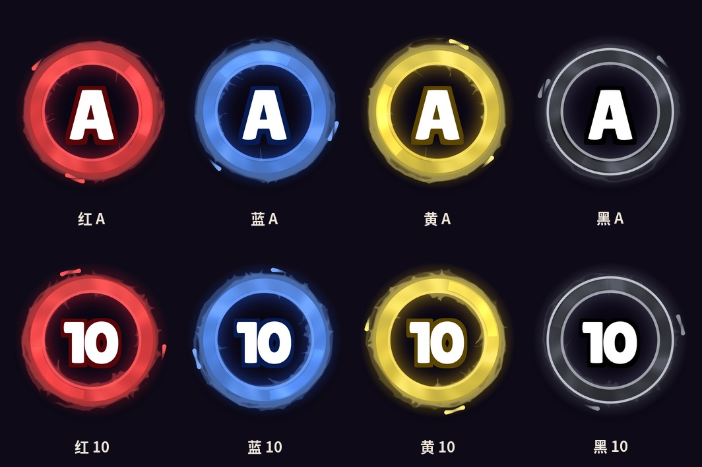

手搓魔法 · 元素能量牌 第七轮：编号缩小 + 能量感加强
设计稿（离线绘制，进游戏前会用游戏渲染器复核）。在第六轮上改：颜色、结构不变，只做两件事——编号缩小、能量特效加强。所有特效都只用这张牌自己颜色的深浅，不混白、不混别的颜色。
一、改了什么
| 反馈 | 第七轮 |
|---|---|
| 编号太拥挤 | 编号缩小约 18%（单字 0.57 → 0.47 牌宽，“10” 0.48 → 0.39），四周留出一圈呼吸空间；仍是白字 + 硬边深色描边，不模糊 |
| 能量特效感不够 |
① 环上的能量流：亮暗条纹沿环不停流动（本色的亮色，选中时流速翻倍） ② 环外电弧：平时就有本色的细电弧在环外沿噼啪闪动；选中时更密更亮 ③ 核心充能：中间底色从环往里透出本色微光，正中保持深色，编号不受影响 ④ 环绕光点：3 颗本色小光点带拖尾绕环飞（选中 4 颗、更快） ⑤ 外圈光晕加强一点，但半径仍封顶，不糊到隔壁牌 |
二、动效（4 秒循环）
0–1.6 秒平时；1.6 秒选中 A、K；2.6 秒起 A、K 依次计分放电。
三、手牌 1:1（手机实际像素，选中 A、K）
第七轮 · 只看颜色和编号
第七轮 · 带强化 / 印章 / 特效标志

第六轮（对比）

扫一眼（缩到手机上的真实观感）


整屏

四、四色 × 全部编号（手牌尺寸）

五、放大看（2 倍）
第七轮

第六轮

平时（上）/ 选中（下）

六、B 方案（黑底）同步更新


还没出的：8 种强化 / 印章 / 特效单独大图、色盲模拟——等定了再补。